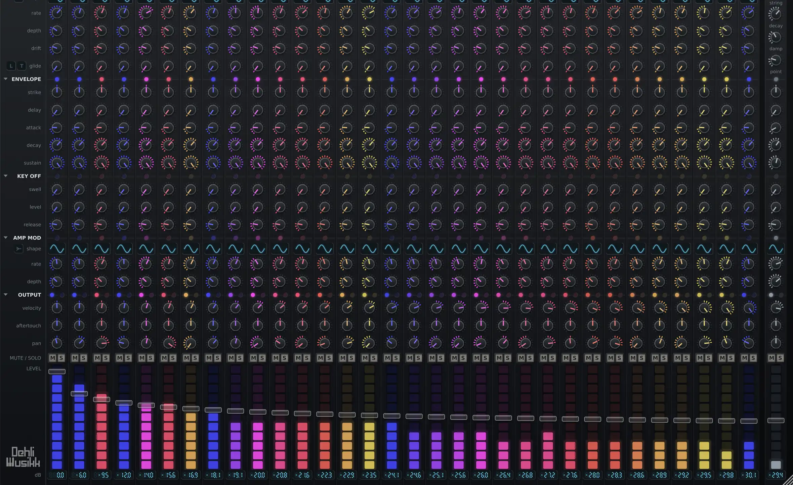
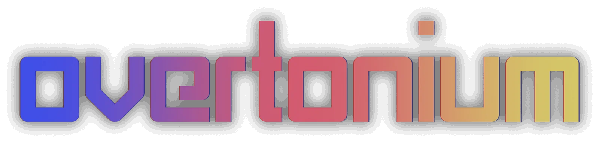
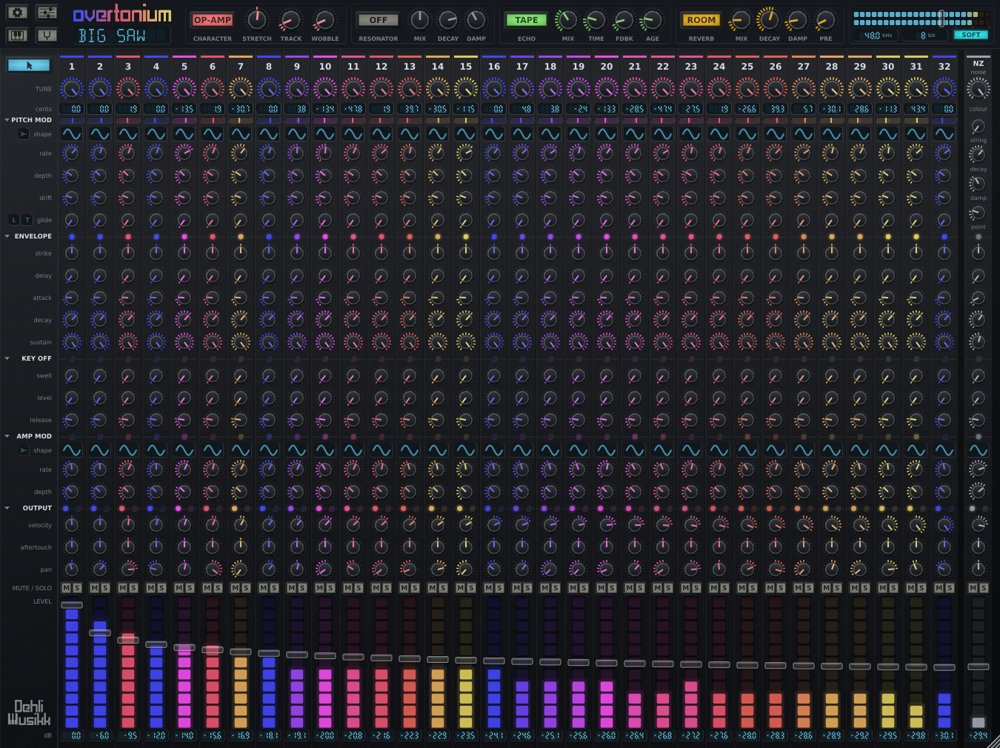

Overtonium, a 32-partial additive overtone synthesizer32-partial overtone synthesizer
An additive synthesizer laid out like a 32-channel mixer. Every channel is one sine oscillator locked to a harmonic of the played note, and every channel has its own tuning, envelope, modulation and place in the stereo field.
- Formats
- VST3, Standalone, AU on macOS, LV2 on Linux
- Platforms
- macOS, Windows, Linux
- Partials
- 32, plus a noise channel
- Licence
- AGPLv3
Additive synthesis usually hides its partials behind a spectrum drawing or a few macro controls. Overtonium puts all of them on the surface as faders, and gives each one the controls of a channel on a mixing desk. You shape a sound by mixing it.

What it sounds like
Eleven of the forty-one factory presets, played on an Expressive E Osmose, with nothing on the output except the plugin's own effects. All the other audio on this site is the plugin rendering a chord to a file. That keeps those clips accurate, but it cannot show how the plugin responds to playing. This is the only recording of it being played.
The presets page has a chapter link for each of the eleven, and a clip of every one of the forty-one presets.
The control to try first
TUNE sweeps each partial continuously between equal temperament and just intonation. At the just end, each partial sits at an exact whole-number ratio to the fundamental and the whole stack blends into one timbre. At the equal end, each partial snaps to the nearest semitone and the same stack sounds like a chord.
Two of the factory presets, Just Saw and Equal Saw, are identical except for that one control. They sound completely different.
Just Saw
Equal Saw
Nothing about the tuning is hard-coded. For harmonic n the just interval is 1200 * log2(n) cents,
the equal position is that rounded to the nearest semitone, and TUNE dials in the remainder.
The tuning system explains it in detail, along with stretch, the nine keyboard temperaments and keyboard
tracking.
Where to go next
- TuningTUNE, inharmonic stretch, eight historical temperaments and an adaptive one on any root, and how the spectrum thins out higher up the keyboard.
- ControlsEvery knob on a channel strip, then the effects on the bar and how to play it from a keyboard, a host or a controller.
- PresetsThe forty-one that ship, what a preset carries, and where your own are kept on each platform.
- InstallInstallers for macOS and Windows, a zip for Linux, what to do when a host does not see it, and building from source.
What changed in each version, newest first, and what to know before upgrading are on the releases page.
Questions
- Which hosts does Overtonium run in?
- It comes as a VST3 on macOS, Windows and Linux, an Audio Unit on macOS and an LV2 on Linux, so it loads in any host that supports those formats. There is also a standalone build.
- Is Overtonium free?
- Yes. It is also free software, not only free of charge. It is released under the AGPLv3 because it uses JUCE, and all of the source is on GitHub.
- What is additive synthesis?
- It builds a sound by adding sine waves together, instead of filtering a rich waveform. Every timbre is a stack of partials at different frequencies and levels, and additive synthesis lets you control those partials directly. Overtonium gives you 32 of them, one per mixer channel.
- Can Overtonium do microtonal tunings and just intonation?
- Yes, both, and they are set separately. TUNE moves each partial between its equal-tempered position and its exact whole-number ratio. The keyboard has its own tuning: equal, just, Pythagorean, quarter-comma meantone, Werckmeister III, Vallotti, Kirnberger III or Young, on any root, at any of eleven reference pitches from 415 to 466 Hz. It can also use Adaptive, which keeps the chord you hold in just intonation as you play, and moves a held note when the next chord needs it.
- Does Overtonium support MPE?
- Yes. With MPE switched on, pitch bend and pressure work per note, and each of the 33 channels has its own pressure amount. An ordinary single-channel keyboard works either way.
- Can I play Overtonium from a MIDI controller?
- Yes. Right-click any control, choose MIDI Learn and move a knob or fader on the controller. The mapping is saved with your project, not with the preset. A macro is one parameter that moves a whole row, so one controller or one automation lane can move up to 32 controls at once.
- Does Overtonium have portamento or glide?
- Yes, on each channel separately. Each partial slides to a new note over its own GLIDE time, so the partials can arrive one at a time. Two switches apply to every channel. One sets whether it glides always or only when you play legato, and the other whether it moves at a fixed rate or takes a fixed time. Glide on the Playing page has the details.
- How much CPU does Overtonium use?
- Eight voices of 32 partials each, with every modulator running, use about 7% of one core, and sixteen voices about 14%. The effects add little, except the resonator with all its strings free, which costs about half as much as eight voices. Lowering the render rate saves a lot. At 8 kHz the whole voice pool costs a fifth as much. The full figures are on the install page.
Where it came from
Overtonium is the fourth instrument in a series, and the first that computes its sound instead of playing back recordings. The two ideas it is built on both came from sitting at a drawbar organ, and neither is really about organs.
The first was the Voltage Controlled Cassette Organ, in 2023. It is a Korg CX-3 sampled through cassette tape, with every note of every drawbar recorded as its own file. The tape was the main idea: wow, flutter and random warbles gave the organ a movement like a chorus or a rotary speaker, but without the fixed rate of a modulation effect. It was recorded to tape twice, which doubled it, and because no tape deck plays back exactly the same way twice, the two passes never quite matched.
Strykebrett followed in October of the same year, a sampled Logan String Melody II. It has six faders instead of nine drawbars, each setting the level of one octave or one of the voices across a bass and a treble section, and four of them have their own envelope and their own LFO. It is not an organ, and that is what makes it useful here: the workflow still worked on a different instrument.
EDB-Orgel followed in 2024. It keeps the drawbar workflow but puts four digital synthesis types under it instead of an organ.
All three gave each drawbar its own envelope and LFO, which is the first of the two ideas. A drawbar is a partial, and on an organ you move the drawbars by hand while the note sounds. Nine of them shaped separately already sound unlike an organ. Thirty-two, each with a full channel of controls, take that idea as far as it goes.
The second idea is about how the drawbars are tuned. A drawbar is a harmonic, but an organ only has the twelve notes of the keyboard to build it from, so each drawbar is tuned to the nearest one. The second, fifth and eighth are all fifths an octave apart, so holding a C puts three G's into the sound. A harmonic series does not work like that. Its real intervals are whole-number ratios, 2:1, 3:2, 4:3, and apart from the octaves none of them lands on a key. TUNE turns that difference into a control, and computing the partials is what makes it possible. A sampled partial is stuck at the pitch it was recorded at. A computed one can sit where the organ would put it, at its exact ratio, or anywhere between.
You can hear the ancestry in the details. DRIFT is the cassette's random warble, per partial. WOBBLE is the same thing applied to the whole instrument. The tape echo's two paths, each with its own motor speed and its own random stream, are the double tracking. Its AGE control never quite reaches zero for the same reason the two tape passes never matched: a transport that held speed exactly would put the repeat back in mono, and no real transport holds speed exactly.
All three earlier instruments are sample libraries with a plugin wrapper, sold at Dehli Musikk. This one is free software, and none of their code is in it.